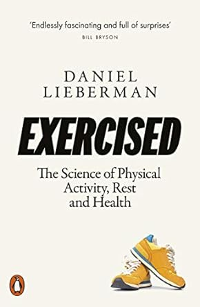

3.2.1 — VO₂max e longevità
Se non ti muovi, muori. 150 minuti di attività fisica moderata a settimana — una camminata veloce di 20 minuti al giorno — riducono la mortalità per tutte le cause del 30%. Chi è completamente sedentario ha un rischio di morte prematura del 50% superiore a chi si muove regolarmente — un dato confermato da Daniel Lieberman in Exercised[1], dove spiega come la specie umana si sia evoluta per essere costantemente attiva, non per “fare esercizio” nel senso moderno. Il sistema MET (Metabolic Equivalent of Task) misura il costo energetico di ogni attività: camminare è 3,5 MET, correre 8, stare seduti 1
(🏃 ff.86.1
Se non ti muovi, muori).
Il dato più potente, però, viene dal VO₂max — la quantità massima di ossigeno che il corpo può utilizzare sotto sforzo. Peter Attia, in Outlive, lo chiama “il miglior predittore singolo di longevità”: chi ha un VO₂max nel quartile più basso ha un rischio di morte 5 volte superiore a chi è nel quartile più alto — più del fumo, del diabete, delle malattie cardiovascolari
(💨 ff.86.2
Misurare l'ossigeno bruciato).
Aggiungiamo un tassello al catalogo omega-3: 2.5 grammi di EPA+DHA al giorno per 8 settimane riducono la perdita di forza post-esercizio tramite oxylipins bioattivi[5]. Gli omega-3 erano già consolidati su cuore e cervello; lo studio estende il beneficio al recupero muscolare — un dominio dove solitamente si sovra-integra con creatina, BCAA, proteine in polvere. Il supplemento più banale risulta anche il più sottovalutato: 2.5 g/die si traducono in quattro capsule da 500mg o una dose singola di olio di pesce. A reggere la salute aggregata è la somma di scelte a basso costo, ripetute, che bilanciano infiammazione e riparazione, molto più del fitness d'élite. Il potere degli interventi economicamente accessibili è spesso inversamente proporzionale al loro glamour percepito.
Il mito dei 10.000 passi è appena stato ridimensionato: bastano 4.000 passi al giorno per ridurre del 9-39% il rischio di mortalità per tutte le cause, incluse cardiopatie, cancro e demenza [35]. La soglia efficace è molto più bassa di quanto l'industria del fitness tracker abbia suggerito per anni: i 10.000 passi erano una campagna marketing giapponese degli anni Sessanta, non una scoperta epidemiologica. Il dato cambia il modello: se la curva è concava — massimi guadagni nei primi 4.000 passi, rendimenti decrescenti dopo — fissare traguardi irraggiungibili produce abbandono, non performance. In 😊 ff.138.2 La strada più felice Kathy Willis aveva mostrato come basti un tragitto leggermente più lungo fra il verde per muovere il benessere. Gli interventi migliori sono quelli che la gente può davvero fare.
Ma se i menu raccontano la salute delle città, i piatti che scompaiono raccontano la società che cambia. La pizza — 31 miliardi di dollari nel 2024, un americano su dieci la mangia ogni giorno — è scesa dal 2° al 6° posto[6] tra le cucine USA per vendite. Se nemmeno la pizza resiste alla frammentazione dei gusti, quale monocultura alimentare è al sicuro? Intanto Carbone porta la Red Sauce joint sulla scena mondiale[7] — la cucina italiana-americana non muore, si reinventa come medium visivo e culturale. E dal lato opposto, sostituire manzo con pollo riduce l’impronta di carbonio dell’80%, ma richiede 200 volte più polli[8]: il dilemma tra benessere animale e impatto ambientale non ha risposte facili (🐶 ff.49.2 BMI, BMR). La vera bomba, però, è farmacologica: Hebbia AI stima che la spesa alimentare cali del 6-9% tra chi usa GLP-1[9], con il 60% che ordina meno fast food. Proiettato al 20%+ degli adulti USA entro il 2030, il mercato grocery da 1.600 miliardi potrebbe perdere 88 miliardi. Un farmaco che cambia il carrello della spesa: meno calorie, meno fatturato, e un sistema alimentare costretto a ripensarsi (💊 ff.53.3 Dal COVID al cancro).

“Il VO₂max è il miglior predittore singolo di longevità. Non il colesterolo, non la pressione, non il BMI. L'ossigeno.”
— Peter Attia, Outlive
Strava, la piattaforma sociale per atleti, conta 120 milioni di utenti attivi. Il suo report annuale racconta le abitudini della generazione che corre: la GenZ preferisce il HIIT (High-Intensity Interval Training), i Millennial corrono, i Boomer pedalano. Il dato più interessante è sociale: chi si allena in gruppo è il 22% più costante di chi si allena da solo (📈 ff.86.3 Report Strava 2023). Il contagio sociale dell'esercizio è reale: uno studio pubblicato su Nature Human Behaviour ha dimostrato che se un amico inizia a correre, la probabilità che tu inizi cresce del 25% (🕸️ ff.17.3 Social network positivi?). I dati del 2021 confermano il trend con una granularità ancora maggiore. Dopo l’anno pandemico le attività caricate su Strava sono cresciute del 38% rispetto al 2020. Chi aveva iniziato a correre nel primo lockdown ha registrato miglioramenti su tutte le distanze nel 2021, segno che l’abitudine sportiva indotta dall’emergenza si è consolidata in pratica duratura. Il dato più sorprendente riguarda le camminate, cresciute di tre volte rispetto all’anno precedente: un fenomeno spinto in parte dai boomer che hanno scoperto il tracciamento digitale anche per la passeggiata al panificio, ma che racconta qualcosa di più profondo. La camminata è l’attività a barriera d’ingresso più bassa che esista: non richiede attrezzatura, non richiede talento, non richiede nemmeno la decisione consapevole di “fare sport”. Eppure il suo impatto sulla longevità e sulla salute mentale è paragonabile a quello della corsa per chi parte da zero. La rivoluzione del movimento sta nel sessantenne che esce di casa con il cane e registra tremila passi senza pensarci, più che nei maratoneti o negli ultrarunner (🏃 ff.17.2 Il report del 2021 di Strava).
E il paragone con chi non ha mai smesso di muoversi riporta la scala al suo punto d’origine. Uno studio pubblicato su American Journal of Human Biology ha misurato la fitness aerobica di tribù di cacciatori-raccoglitori[10] come i Hadza della Tanzania, senza allenamento strutturato, senza wearable, senza protocolli HIIT: i dati di VO₂max risultano eccezionalmente alti, superiori a quelli della maggior parte degli occidentali che si allenano regolarmente. I cacciatori-raccoglitori si muovono tutto il giorno, tutti i giorni, a bassa intensità, interrotti da occasionali picchi di sforzo. È la conferma empirica della tesi di Lieberman in Exercised: la specie umana è stata selezionata per essere costantemente attiva, più che per “fare sport”. Il paradosso contemporaneo è che 150 minuti a settimana di esercizio strutturato sono diventati una soglia aspirazionale — quando i nostri antenati ne facevano dieci volte tanto senza chiamarlo allenamento. La prescrizione di Attia (VO₂max alto = longevità) e quella di Lieberman (movimento costante = evoluzione) convergono su un punto: la palestra è un surrogato imperfetto di un’esistenza mobile che abbiamo smontato pezzo per pezzo con sedie, auto e ascensori.
Ma la provocazione più netta arriva da Alan Couzens[11], coach esperto di performance: se non riesci a correre una maratona, la tua salute è precaria. Rispondendo a un medico che definisce le maratone “l’attività più inutile dell’umanità”[12], Couzens fa notare: con un VO₂max di 50+, il rischio di morire per ogni causa è 4 volte minore[13]. Per un individuo di 75 kg, VO₂max 50+ significa correre una maratona in 5 ore: 42 km a 7 min/km, 8,5 km/h, circa 2.100 kcal. Il VO₂max misura i “cavalli” dell’organismo: il consumo massimo di ossigeno (ml/min/kg) sotto sforzo. Un modo per misurarlo è il test di Cooper[14] (👨⚕️ ff.57.2 Il consiglio del medico).
Couzens ha una soglia anche per il cuore a riposo. Alla domanda su quale sia una frequenza sana risponde sotto i 50 battiti al minuto[25], e cita un grande studio sul CMAJ: il rischio di morte per qualsiasi causa sale del 9% ogni 10 battiti in più, così chi ne ha 75 a riposo ha circa il 30% di probabilità in più di morire di chi ne ha 45. Nei suoi dati, sotto i 50 battiti si trovano anche un VO₂max sopra i 50 ml/kg/min e 14 MET: la soglia oltre la quale, in uno studio su 750.000 persone sottoposte al test di Bruce, dopo vent’anni si moriva quattro volte meno di chi si fermava a 5 (🏃🏼♂️ ff.120.1 Quanto correre per “scappare” alla morte?). Il conto si può fare anche in ore. Un’umbrella review sugli anziani trova un rischio di morte più basso del 40-60% a 60 MET-ore a settimana[26], e Couzens lo traduce per un settantenne molto in forma, con un VO₂max di 40: allenandosi al 50-60% del massimo sono circa 10 ore a settimana, novanta minuti ogni giorno.
Quelle ore vanno costruite per tempo, e Couzens lo dice con un’opinione che chiama impopolare: bisogna allenarsi per la pensione[27]. Arrivare a 65 anni dopo aver passato i cinquanta a lavorare dodici ore al giorno, con i soldi ma senza la forma per esplorare gli anni che restano, è il rischio da evitare; meglio pianificare qualcosa di grande per i sessant’anni e usare i quaranta e i cinquanta per liberare via via tempo per allenarsi. Anche Bill Perkins, in Die with zero, avverte che le nostre stime degli anni di vita dopo il lavoro sono grossolane (🛡️ ff.111.3 Figli, salute e anni sprecati). Nel luglio 2026 Couzens ha disegnato la rampa che dovrebbe durare una vita[28]: 100 ore di allenamento l’anno a 25 anni, 12 in più ogni anno fino agli 80, con gare e divertimenti come deviazioni intorno alla linea. Il muscolo spiega la fretta: dopo i 30 anni se ne perde il 3-8% ogni decennio[29], la perdita accelera dopo i 60, e con meno massa magra il metabolismo rallenta.
Ma se il movimento allunga la vita, quanto la allunga davvero la sconfitta delle grandi malattie? Il tema del cancro è tosto — tutti noi, in modo più o meno diretto, ne siamo toccati. I numeri, però, offrono una speranza concreta: il calo delle morti per tumore iniziato negli anni Novanta è reale, trainato da meno fumo, migliore prevenzione e cure sempre più mirate. Una donna su otto riceve una diagnosi di tumore al seno nel corso della vita; eppure il Trastuzumab Deruxtecan — una terapia sviluppata per tumori al seno HER-negativi precedentemente critici — ha dimostrato una sopravvivenza mediana di 23,4 mesi contro i 16,8 del trattamento standard. Nei maschi, le morti per tumore si sono dimezzate dal picco degli anni Novanta. Eppure, secondo Kristen Fortney, fondatrice di BioAge Lab, la cura definitiva del cancro porterebbe a un aumento dell'aspettativa di vita di soli 3-4 anni. Non arriveremmo a cento. La malattia su cui dovremmo davvero focalizzarci? L'invecchiamento stesso — il denominatore comune che rende ogni altra patologia più probabile, più grave, più costosa. Il VO₂max, il microbioma, il sonno profondo sono i veri farmaci anti-invecchiamento, disponibili senza ricetta e senza effetti collaterali (🤞 ff.53.1 Meno morti per il cancro).
Anche l’incidenza ha una sua geografia. Nei dati del Global Cancer Observatory dell’OMS, in tassi standardizzati per età, ogni anno si ammalano di tumore 335 danesi su 100.000[30], 297 statunitensi e 278 italiani, contro i 96 dell’India e una media mondiale di 190. La standardizzazione calcola il tasso che ogni paese avrebbe con una struttura per età di riferimento, perché l’età pesa più di tutto sul rischio di morire di cancro.
Ma c'è una scomoda verità che il mercato del wellness preferisce non pronunciare. Un lavoro pubblicato su Science, rimuovendo la mortalità estrinseca e validando su gemelli, stima che la longevità sia ereditabile al 50%, il doppio delle stime precedenti[18]. Più di metà di quanto vivremo è già scritto nei geni — un dato che ridimensiona la narrazione “tutto dipende dallo stile di vita” su cui poggia un'industria da mille miliardi. Cambia la domanda da porsi. Se la genetica fissa il tetto, l'esercizio decide quanto del tetto raggiungi davvero — e qui la provocazione di 🏃 ff.120.1 Quanto correre per “scappare” alla morte?, dove i 750.000 classificati per fitness metabolico mostravano la mortalità crollare con i MET, resta intatta: i geni caricano la pistola, il movimento decide se premere il grilletto. È anche il motivo per cui in 🦴 ff.145.1 L'uomo all'osso sostenevamo che, mentre l'automazione svaluta soldi e competenze, la salute biologica misurata in VO₂max diventi la nuova ricchezza: l'unico capitale che resta scarso quando tutto il resto si automatizza è un corpo che funziona, ereditato a metà e conquistato per l'altra metà.
Nei registri, intanto, la vecchiaia si sposta in avanti. In Svezia chi compie 100 anni è quintuplicato dagli anni Novanta[31]: nel 2022 una donna aveva il 2% di probabilità di arrivarci e un uomo lo 0,5%, contro l’1,1% e lo 0,3% del 1990. Lo studio svedese da cui vengono i dati avverte però che i nuovi centenari sono più malati[32]: una quota crescente ha diagnosi di malattie croniche, e chi prende molti farmaci insieme è passato da circa il 50% nel 2006 all’80% nel 2022. In Sardegna la famiglia Melis era entrata nel Guinness con nove fratelli dall’età media di 93 anni (🫘 ff.92.1 Fagioli di bazar). Negli Stati Uniti, a parità di età, la demenza cala da quarant’anni secondo il National Long Term Care Survey: i novantenni di oggi hanno meno della metà del rischio di quelli del 1984[33]. E per Paddy Barrett la parte che dipende da noi ha un valore preciso: non fumare, restare attivi, peso normale, alcol moderato e una buona dieta, sistemati a 50 anni, valgono 12 anni di vita in più agli uomini e 14 alle donne[34].
Che cosa eredita davvero un figlio, se l’allenamento del padre arriva prima di lui? Un gruppo dell’Università di Nanjing sposta il confine fra quello che si riceve e quello che si costruisce, e lo sposta indietro di una generazione: nei topi una parte dell’allenamento del padre arriva ai figli attraverso i microRNA degli spermatozoi[22]. Lo studio, uscito su Cell Metabolism nell’ottobre 2025, ha diviso i maschi fra allenati e sedentari per otto settimane. Da adulti, e senza essersi mai allenati, i figli maschi dei padri allenati reggevano più a lungo e coprivano più distanza nelle prove di resistenza, con più massa magra e meno grasso, come i padri. Per togliere di mezzo il DNA gli autori hanno estratto i piccoli RNA dallo sperma dei padri allenati e li hanno iniettati in zigoti di topi qualsiasi: i nati hanno mostrato gli stessi tratti, nel comportamento, nel metabolismo e nei geni. La strada passa per i mitocondri. L’esercizio rimodella i microRNA dello sperma, che nell’embrione spengono NCoR1, il freno di PGC-1α, la proteina che spinge la funzione mitocondriale; ne escono più mitocondri e un metabolismo più ossidativo. Iñigo San Millán, l’allenatore di Pogačar, mette la chiave della sopravvivenza nella respirazione cellulare e ricorda che da sedentari i mitocondri non li attiviamo affatto (🥇 ff.53.2 Sportivi professionisti in nostro aiuto): qui quell’attivazione lascia una traccia anche in chi nasce dopo. Lo sperma che una startup di Boston proponeva di congelare in casa con un kit da 195 dollari (🪁 ff.26.4 Startups per la fertilità maschile) non porta solo DNA.
La domanda pesa perché il metabolismo di una popolazione può cambiare nel giro di una generazione: in Cina l’esposizione ai cibi ultra-processati ha portato il diabete da un caso su 150 a uno su 10 (🚬 ff.145.4 Il cibo nuoce gravemente alla salute). Prima di farne un consiglio per chi vuole diventare padre servono però tre cautele. Sono topi, e i figli misurati sono i maschi adulti. Come riassume David Keefe su Obstetrical & Gynecological Survey nel maggio 2026, il vantaggio non passa alla seconda generazione: i nipoti non lo ereditano. E nel 2016 un esperimento simile aveva dato il segno opposto: dopo dodici settimane di ruota volontaria, i figli dei topi corridori reagivano peggio a una dieta ricca di grassi[23], con più peso, più grasso, peggiore tolleranza al glucosio e più insulina. Anche lì lo sperma dei padri aveva cambiato i suoi microRNA, e gli autori parlavano di un fenotipo «parsimonioso». Nessuno dei due lavori misura un essere umano.
Gli esseri umani, invece, li segue da decenni l’Harvard Alumni Health Study: gli uomini entrati come matricole a Harvard fra il 1916 e il 1950. Nel dicembre 1998 due epidemiologi della Harvard School of Public Health, I-Min Lee e Ralph Paffenbarger, ne hanno usato i questionari per un articolo sul BMJ intitolato «Life is sweet»[24], la vita è dolce. Partono da un atteggiamento che chiamano puritano, il sospetto che se ha un sapore così buono, non può far bene. Un appiglio c’è: nell’indice di sazietà il piacere al palato pesa al contrario, e a parità di calorie le patate saziano 332 contro i 47 del croissant (🤰🏻 ff.22.4 I cibi che saziano di più). Gli autori ricordano però che gli americani mangiano in media 5,4 kg di caramelle e 6,5 kg di cioccolato a testa all’anno, e che i dolci esistono da secoli: difficile che siano del tutto nocivi. Nel 1988 7.841 ex studenti senza malattie cardiovascolari né tumori avevano indicato quante volte avevano mangiato dolci nell’ultimo anno, da «quasi mai» a sei o più volte al giorno.
Fra il 1988 e la fine del 1993 ne sono morti 514: il 7,5% di chi non mangiava mai dolci, il 5,9% di chi li mangiava. Tenuto conto di età, peso, attività fisica, fumo, alcol, carne rossa, verdure e integratori, il rischio di morte dei consumatori risultava più basso del 27% (rischio relativo 0,73). La dose però non segue una retta: il rischio più basso era di chi ne mangiava da una a tre volte al mese (0,64), il più alto fra i consumatori di chi arrivava a tre o più volte a settimana (0,84, dentro il margine d’errore). Fino ai 95 anni, chi mangiava dolci guadagnava in media 0,92 anni: quasi un anno di vita in più. Il questionario non distingueva le caramelle dal cioccolato, e l’ipotesi degli autori punta sul secondo, per i suoi fenoli antiossidanti: 41 grammi di cioccolato ne contengono quanto un bicchiere di vino rosso. Sono parenti dei polifenoli di cui è ghiotto il microbioma, e che fanno di caffè e tè, con un punto di domanda, un’arma contro i picchi glicemici (☕ ff.92.3 Tè o caffè? Benzina del microbioma).
Resta un’associazione: un solo questionario, cinque anni di certificati di morte, soli uomini, tutti ex studenti di Harvard. Chi non mangiava dolci fumava un po’ di più (9,0% di fumatori contro 7,3%) e beveva di più, 104 grammi di alcol a settimana contro 76. L’attività fisica, invece, era simile nei due gruppi, intorno alle 2.000 chilocalorie a settimana fra camminate, scale e sport. Il dolce non prendeva il posto del movimento, che per Alan Couzens è un allenamento lungo una vita: per mantenere un buon livello di forma a 80 anni serviranno 760 ore di allenamento all’anno (🏋️♂️ ff.152.2 Un piano di allenamento, ma per la vita.). Lee e Paffenbarger concludono che, come per quasi tutto, conta la moderazione. Nella dichiarazione sui conflitti d’interesse confessano un debole per il cioccolato: una tavoletta al giorno a testa.
E il collegamento tra esercizio e cancro è anche biochimico. Una singola sessione di resistenza o HIIT aumenta le miochine anti-cancro e sopprime la crescita di cellule tumorali in vitro in sopravvissute al cancro al seno. Basta un solo workout, senza mesi di protocollo, per rilasciare molecole che il tumore non gradisce. Se l’esercizio è un farmaco oncologico — e questi dati suggeriscono che lo sia, sessione per sessione — la palestra è una farmacia senza ricetta, senza effetti collaterali e senza costi farmaceutici. Il dato si incastra con la provocazione di Couzens: se un VO₂max di 50+ dimezza la mortalità per tutte le cause, e una singola sessione HIIT rilascia miochine anti-tumorali, resta da capire perché i medici non prescrivano il movimento come una medicina. Come già visto per la spugna metabolica muscolare, il corpo in movimento combatte, oltre a prevenire.
E se il VO₂max è il farmaco anti-invecchiamento più potente, una domanda taglia la discussione a metà: conta di più muoversi o mangiare bene? Uno studio pubblicato su Nutrition rivela che chi si muove regolarmente allunga la vita anche mangiando male[15] — e, simmetricamente, chi non si muove trae benefici limitati anche dalla dieta migliore. Il movimento viene prima della nutrizione, come suo prerequisito. La spiegazione passa per la biochimica muscolare: quando i muscoli sono attivati, agiscono da spugna metabolica e assorbono gli eccessi glicemici prima che danneggino le arterie. È un riordino delle priorità: se dovete scegliere tra una camminata e un’insalata, scegliete la camminata. La dieta perfetta senza movimento è una Ferrari senza benzina: bellissima, ferma (🥗 ff.120.2 Dieta o esercizio?). A confermarlo arriva un indicatore sorprendentemente semplice: una circonferenza del polpaccio sotto 35 cm predice mortalità più alta negli anziani[16], mentre sopra 38,5 cm è associata a mortalità ridotta — il polpaccio come oracolo di longevità.
Chi si muove regolarmente allunga la vita anche mangiando male; chi non si muove trae benefici limitati anche dalla dieta migliore. I muscoli attivati agiscono da spugna metabolica e assorbono gli eccessi glicemici prima che danneggino le arterie. Se dovete scegliere tra una camminata e un’insalata, scegliete la camminata.
Una metrica sorprendentemente potente per l'aspettativa di vita negli anziani è la circonferenza del polpaccio[17]: sotto i 35 cm predice mortalità significativamente più alta, sopra i 38,5 cm si associa a outcome protetti. Il polpaccio è il serbatoio muscolare di riserva metabolica più facile da perdere con la sedentarietà e il più utile in caso di malattia acuta. Se un nastro da sarto batte marker biochimici complessi nel predire la sopravvivenza, la medicina preventiva andrebbe riletta partendo dal basso — letteralmente.
Tutto il capitolo misura la longevità con strumenti da spogliatoio: passi, VO₂max, un nastro da sarto intorno al polpaccio. Intanto un’altra leva arriva in clinica: la FDA ha autorizzato ER-100 di Life Biosciences, primo trial umano di riprogrammazione epigenetica parziale[19]. Sinclair porta i fattori di Yamanaka — Oct4, Sox2, Klf4 — al letto del paziente lasciando fuori c-Myc, l’oncogene, e il ringiovanimento cellulare smette di essere fantascienza per diventare una Phase 1. Il capitale si è già posizionato: NewLimit, la società di riprogrammazione epigenetica co-fondata dal CEO di Coinbase Brian Armstrong, ha chiuso un Series C da 435 milioni[20] — il capitale cripto migra verso la biologia della longevità. Un termine di paragone esiste già: il record di inversione dell’invecchiamento epigenetico, cinque anni, appartiene a chi ha portato la disciplina all’estremo con 977 calorie al giorno e 100+ pillole (💊 ff.49.4 Il superuomo che prende 100 pillole al giorno). La domanda che mezzo miliardo di dollari mette sul tavolo: quei cinque anni si compreranno in fiala, oppure siamo davanti all’ennesima scommessa ad altissimo rischio scientifico?
Dal nastro da sarto si può scendere fino al DNA mitocondriale restando sullo stesso tema. Uno studio ha rilevato che l'aderenza alla dieta mediterranea alza i livelli di due microproteine mitocondriali[21], Humanin e SHMOOSE, entrambe legate alla resistenza allo stress cellulare. Sono molecole codificate nel DNA dei mitocondri e non nel nucleo: seguire questa dieta diventa allora un modo di parlare direttamente ai propri mitocondri. Il discorso si sposta dalla nutrizione ai segnali cellulari, dalle calorie ai messaggeri biochimici che il cibo modula. È la stessa tensione che percorre il capitolo, tra cosa metti nel piatto e quanto ti muovi (🥗 ff.120.2 Dieta o esercizio?): qui l'ago pende verso il piatto, e la posta in gioco è l'effetto longevità della dieta mediterranea (👴 ff.99.1 Cosa mangiare per non invecchiare?).
Sul fronte delle cellule la scommessa è ringiovanirle riscrivendone le istruzioni. I fattori di Yamanaka, Nobel nel 2012, riportano una cellula adulta allo stato di staminale, ma di solito ne convertono meno dello 0,1% in tre settimane o più. Nell’agosto 2025 OpenAI e Retro Biosciences, di cui Sam Altman è investitore, hanno usato GPT-4b micro, un modello per l’ingegneria delle proteine, per ridisegnare SOX2 e KLF4: oltre il 30% delle varianti proposte batteva la proteina naturale, dove gli screening tradizionali restano sotto il 10%, e insieme hanno dato un aumento di 50 volte nell’espressione dei marcatori di riprogrammazione[35]. NewLimit, la società di longevità del fondatore di Coinbase, ha presentato un prototipo di farmaco, M0004[36], che rende gli epatociti vecchi più resistenti all’alcol e più capaci di rigenerarsi dopo una lesione chirurgica; dati preliminari, avverte Jacob Kimmel. Yong Zhao lavora sul sistema immunitario: cinque ore di aferesi, 12 litri di sangue processati[37] e 1,27 miliardi di cellule immunitarie «rieducate» con staminali da cordone. C’è chi riprogramma cellule pluripotenti anche per far ricrescere i capelli, come dNovo (🫀 ff.25.2 La dimensione del problema dei trapianti).
La longevità ha già un listino. Loyal sviluppa farmaci per allungare la vita dei cani: LOY-002, una pillola quotidiana per cani dai 10 anni in su[38], punta sulla sensibilità all’insulina e ha già visto accettati due dei tre requisiti principali chiesti dalla FDA, mentre lo studio STAY ha arruolato 1.317 cani in 70 ambulatori; per i cani di taglia grande LOY-003 ha appena superato un passaggio chiave con l’agenzia. È lo stesso mercato degli animali domestici che con la solitudine della pandemia era esploso (📦 ff.25.4 Amazon per gli animali: una bolla?). Per gli umani Fountain Life vende abbonamenti annuali, CORE, APEX e APEX Family[39], che uniscono diagnostica guidata dall’intelligenza artificiale e terapie personalizzate per allungare gli anni in salute.